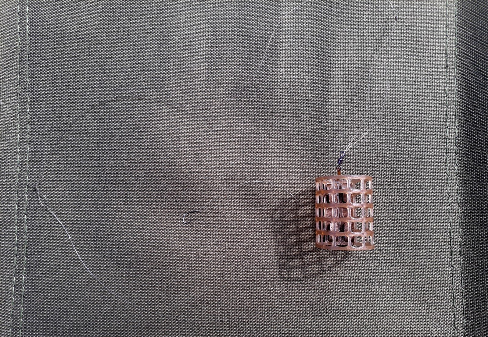

Meškerės Žvejybai
 Mano krepšelis 0 (0)Prekių nėra
Pirkti
Prekė sėkmingai pridėta į krepšelį Kiekis Viso Krepšelyje yra 0 prekė (-ės). Krepšelyje yra 1 prekė. Prekės viso Viso pristatymas Turi būti nustatyta Viso Tęsti apsipirkimą Pereiti prie apmokėjimo Prisijungti NAUJOS PREKĖS POPULIARIOS PREKĖS GAMINTOJAI AKCIJINĖS PREKĖS Tinklaraštis Meškerės Spiningai Dugninės Plūdinės Karpiniai Jūrinės Žieminės Ritės, priedai Priekinis stabdis Galinis stabdis Multiplikatorinės Masalai spiningavimui Pilkeriai Silikoniniai masalai Vobleriai Blizgės Guminiai masalai Jerkai Atraktantai Pavadėliai Balansyrai Valai, pavadėliai Fluorocarboniniai Monoflamentiniai Pinti Pavadėliams Kiti žūklės reikmenys Plūdės Kita Signalizatoriai Graibštai, tinkleliai, sieteliai Stovai, kuoliukai Švinai, šėryklos Kabliukai Dėžės, dėžutės Jaukai Sistemėlės Apranga, avalynė Avalynė Kepurės Striukės Kelnės Marškinėliai Kita Akiniai Bliuzonai Apatiniai Kombinezonai Pirštinės Kėdės, lovos, elektronika Kėdės Kita Prožektoriai Optika Palapinės Priedai Palapinės Miegmaišiai Kilimėliai Rankšluosčiai Lauko virtuvės Baldai Peiliai Termosai Indai Kuprinės, Krepšiai Krepšiai KuprinėsMeškerės
Apranga, avalynė Akiniai Apatiniai Avalynė Bliuzonai Kelnės Kepurės Kita Kombinezonai Marškinėliai Pirštinės Striukės Kėdės, lovos, elektronika Kėdės Kita Optika Prožektoriai Kiti žūklės reikmenys Dėžės, dėžutės Graibštai, tinkleliai, sieteliai Jaukai Kabliukai Dvišakiai Galvakabliai Ofsetiniai Trišakiai Vienšakiai Kita Plūdės Fiksuotos plūdės Waggler plūdės Signalizatoriai Sistemėlės Stovai, kuoliukai Švinai, šėryklos Kuprinės, Krepšiai Krepšiai Kuprinės Lauko virtuvės Baldai Indai Peiliai Termosai Masalai spiningavimui Atraktantai Balansyrai Blizgės Guminiai masalai Jerkai Pavadėliai Pilkeriai Silikoniniai masalai Vobleriai Meškerės Dugninės Jūrinės Karpiniai Plūdinės Spiningai Žieminės Miegmaišiai Kilimėliai Rankšluosčiai Palapinės Palapinės Priedai Ritės, priedai Galinis stabdis Multiplikatorinės Priekinis stabdis Valai, pavadėliai Fluorocarboniniai Monoflamentiniai Pavadėliams PintiFiltras
Kraunama...
Meškerės
1 2 3 ... 18 Rodoma 1 - 16 iš 273 dalykų 0/5 Greita peržiūra 25,23 € IšparduotaDAM Hyprpon Carp 3.60 m.
DAM Hypron Carp - tai pakankamai galinga, dugninė meškerė, skirta gaudant dideles, karpines žuvis. Puikiai tiks pradedančiajam karpininkui.
25,23 € Į krepšelį Daugiau Išparduota 0/5 Greita peržiūra 53,21 € IšparduotaFiume spiningas Revenger 2.40 m. 5-20 g.
Fiume "Revenger" tai jautrus ir lengvas spininginis kotas. Šis meškerykotis skirtas gaudyti įvairiais spiningavimo būdais, pradedant agresyviu džigų ir baigiant klasikiniu spiningavimu, kuomet masalas švelniai pravedinėjamas vandens telkinyje.
53,21 € Į krepšelį Daugiau Išparduota 0/5 Greita peržiūra 52,29 € IšparduotaFiume Feeder Tornado 3.60 m. 120 g.
Fiume Feeder "Tornado" pagamintas atsižvelgiant į dugninės meškerės entuziastų komentarus. Tai profesionalus meškerykotis, skirtas gaudyti tiek stovinčiame tiek tekančiame vandenyje.
52,29 € Į krepšelį Daugiau Išparduota 0/5 Greita peržiūra 56,88 € IšparduotaFiume Match Varadero 3.90 m.
Fiume Match "Varadero" yra plūdinio tipo kotas, skirtas žvejams, kurie vertina komfortą. Tai ultralengvas ir itin jautrus kotas, orientuotas į mažų ir vidutinių žuvų žūklę.
56,88 € Į krepšelį Daugiau Išparduota 0/5 Greita peržiūra 29,36 € IšparduotaDAM Hyprpon Carp 3.90 m.
DAM Hypron Carp - tai pakankamai galinga, dugninė meškerė, skirta gaudant dideles, karpines žuvis. Puikiai tiks pradedančiajam karpininkui.
29,36 € Į krepšelį Daugiau Išparduota 0/5 1 Greita peržiūra 63,30 € IšparduotaFiume spiningas Revenger 2.70 m. 5-20 g.
Fiume "Revenger" tai jautrus ir lengvas spininginis kotas. Šis meškerykotis skirtas gaudyti įvairiais spiningavimo būdais, pradedant agresyviu džigų ir baigiant klasikiniu spiningavimu, kuomet masalas švelniai pravedinėjamas vandens telkinyje.
63,30 € Į krepšelį Daugiau Išparduota 0/5 Greita peržiūra 55,04 € IšparduotaFiume Feeder Tornado 3.60 m. 150 g.
Fiume Feeder "Tornado" pagamintas atsižvelgiant į dugninės meškerės entuziastų komentarus. Tai profesionalus meškerykotis, skirtas gaudyti tiek stovinčiame tiek tekančiame vandenyje.
55,04 € Į krepšelį Daugiau Išparduota 0/5 Greita peržiūra 60,55 € IšparduotaFiume Match Varadero 4.20 m.
Fiume Match "Varadero" yra plūdinio tipo kotas, skirtas žvejams, kurie vertina komfortą. Tai ultralengvas ir itin jautrus kotas, orientuotas į mažų ir vidutinių žuvų žūklę.
60,55 € Į krepšelį Daugiau Išparduota 0/5 Greita peržiūra 49,53 € Yra sandėlyjeDAM Steelpower red 2.10 m. 12 lbs
DAM SteelPower® RED lengvos klasės meškerės žvejybai iš laivo. Jų konstrukcijoje naudojama naujo tipo "Tvirta viršūnėlė" (“Power Tip”), pagaminta iš specialaus tankio pilnavidurės medžiagos, kuri sujungiama su anglies pluošto blanku. Taip išgaunamas didesnis jautrumas ir tvirtumas.
49,53 € Į krepšelį Daugiau Yra sandėlyje 0/5 Greita peržiūra 53,21 € IšparduotaFiume spiningas Revenger 2.40 m. 10-30 g.
Fiume "Revenger" tai jautrus ir lengvas spiningas. Šis meškerykotis skirtas gaudyti įvairiais spiningavimo būdais, pradedant agresyviu džigų ir baigiant klasikiniu spiningavimu, kuomet masalas švelniai pravedinėjamas vandens telkinyje.
53,21 € Į krepšelį Daugiau Išparduota 0/5 Greita peržiūra 56,88 € IšparduotaFiume Feeder Tornado 3.90 m. 120 g.
Fiume Feeder "Tornado" pagamintas atsižvelgiant į dugninės meškerės entuziastų komentarus. Tai profesionalus meškerykotis, skirtas gaudyti tiek stovinčiame tiek tekančiame vandenyje.
56,88 € Į krepšelį Daugiau Išparduota 0/5 Greita peržiūra 36,69 € IšparduotaFiume Match Firenze 3.90 m. 25 g.
Fiume match "Firenze" plūdinio tipo meškerykotis, pagamintas iš anglies pluošto, tinkamas naudoti visos baltos žuvies žūklėje.
36,69 € Į krepšelį Daugiau Išparduota 0/5 Greita peržiūra 54,11 € IšparduotaDAM Steelpower red 2.10 m. 300-800 g.
DAM SteelPower® RED lengvos klasės meškerės žvejybai iš laivo. Jų konstrukcijoje naudojama naujo tipo "Tvirta viršūnėlė" (“Power Tip”), pagaminta iš specialaus tankio pilnavidurės medžiagos, kuri sujungiama su anglies pluošto blanku. Taip išgaunamas didesnis jautrumas ir tvirtumas.
54,11 € Į krepšelį Daugiau Išparduota 0/5 Greita peržiūra 18,35 € IšparduotaOkuma G-Force Carp 3,60 m. 2,75 lbs
Okuma G-Force Carp, tai tvirtas kotas, skirtas karpių žvejybai. Koto rankena pagaminta iš lengvos medžiagos, EVA putų. Pats kotas pagamintas iš kompozitinių medžiagų.
18,35 € Į krepšelį Daugiau Išparduota 0/5 Greita peržiūra 35,78 € IšparduotaFiume spiningas Arsenal 2.40 m. 3-18 g.
Fiume "Arsenal" tai klasikinis spininginis kotas. 2.40 m. versija yra idealus pasirinkimas gaudant lydekas ar ešerius iš valties. Kotas iki 18 g. užmetimo svorio, taip pat puikiai užsirekomendavo gaudant šapalus.
35,78 € Į krepšelį Daugiau Išparduota 0/5 Greita peržiūra 60,55 € IšparduotaFiume Feeder Tornado 3.90 m. 150 g.
Fiume Feeder "Tornado" pagamintas atsižvelgiant į dugninės meškerės entuziastų komentarus. Tai profesionalus meškerykotis, skirtas gaudyti tiek stovinčiame tiek tekančiame vandenyje.
60,55 € Į krepšelį Daugiau Išparduota 1 2 3 ... 18 Rodoma 1 - 16 iš 273 dalykųNAUDINGA INFORMACIJA
Apie mus Naujienos Prekių pristatymas ir atsiėmimas Atsiskaitymas Pirkimo taisyklės Grąžinimas ir garantija DUK Dovanų kuponai Susisiekite su mumis AntKranto.ltMUS RASITE
UAB „Auksinis karosas“ Molėtų pl.13, Didžioji Riešė, Vilniaus raj.Įmonės kodas 302917520,
Tel. Darbo dienomis +370 655 23218
Tel. Savaitgaliais +370 655 23218
DARBO LAIKAS
I-V 8:00 - 20:00V-VI 8:00 - 20:00
VII 8:00 - 20:00 © 2015 UAB „Ant Kranto“. Visos teisės saugomos Sprendimas: